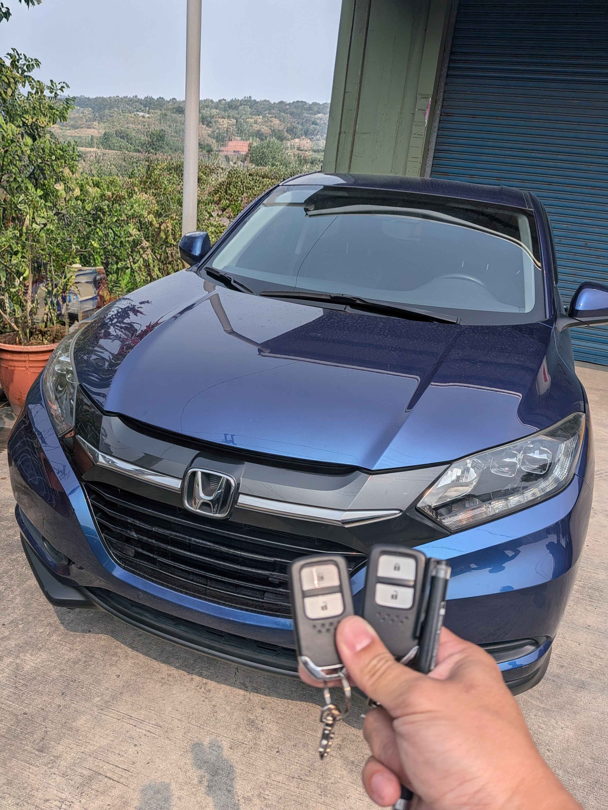

現場實拍：台中龍井 2022 Honda HR-V 智慧鑰匙全丟現場匹配
台中龍井區：2022 年式 Honda HR-V 現場重啟
今日接獲位於台中龍井區的緊急救援電話，車主表示 2022 年式 Honda HR-V 的所有智慧感應鑰匙均不慎遺失。這款新世代車型的防盜系統極為嚴密，若回原廠處理不僅需要支付高昂的拖吊費用，更需面臨長達數週的零件等待期。極致核心技師接獲通報後，隨即攜帶車系解碼設備前往現場。
技術核心：OBDII 協議解碼與雙鑰匙匹配
針對 Honda 新世代防盜系統，我們執行了以下精密流程：
- • 免拆模組： 全程使用 OBDII 介面進行資料讀取，保護車輛線路與內裝完整性。
- • 雙鑰匙匹配： 現場一次為車主配製兩把全新智慧鑰匙，提供雙重保障。
- • 完整測試： 確保 Keyless 免鑰匙進入、一鍵啟動 (Push Start) 功能均與原廠規格一致。
極致核心專業的現場服務，讓車主在龍井當地就能在一個小時內重新啟動車輛，省去了進出原廠的繁瑣流程。